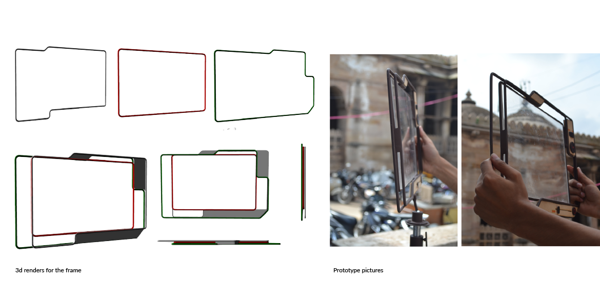
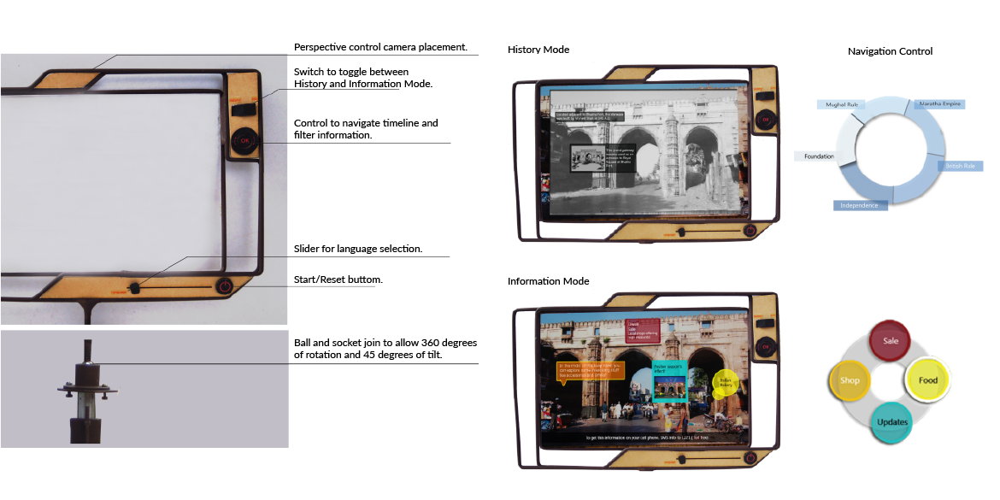
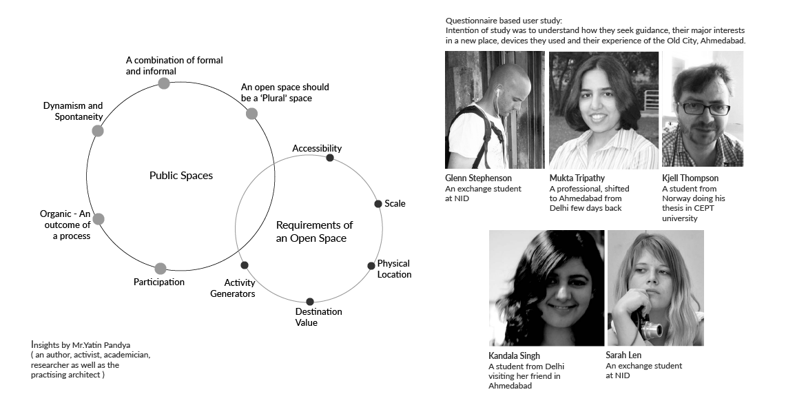
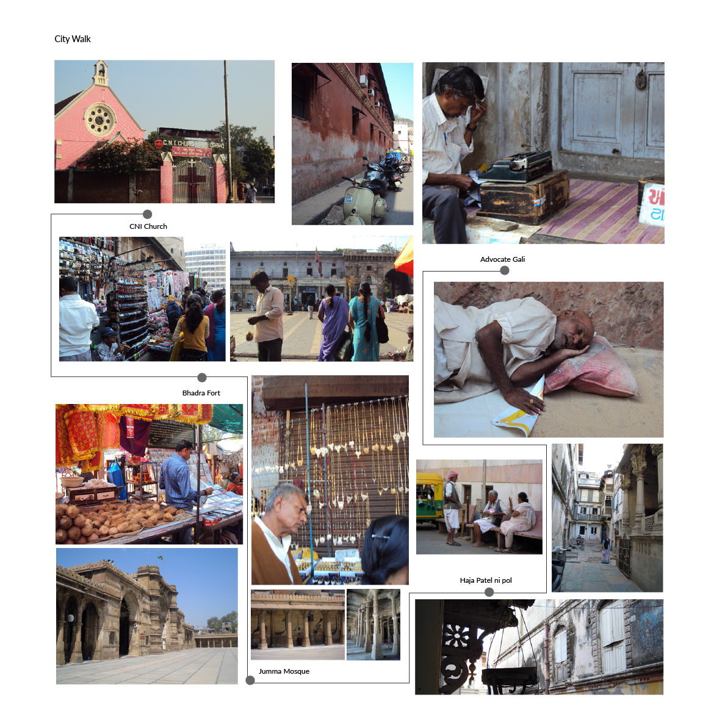
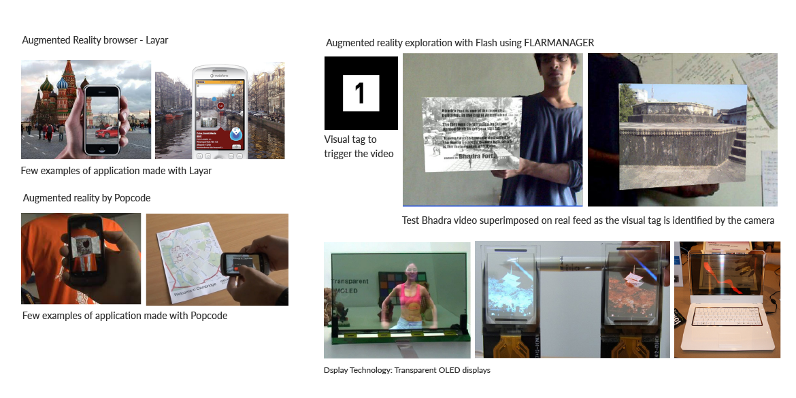
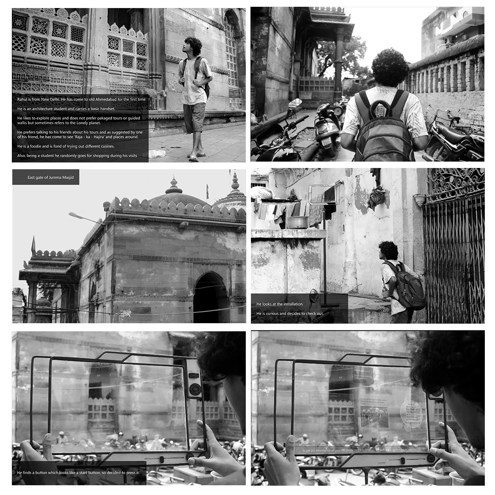
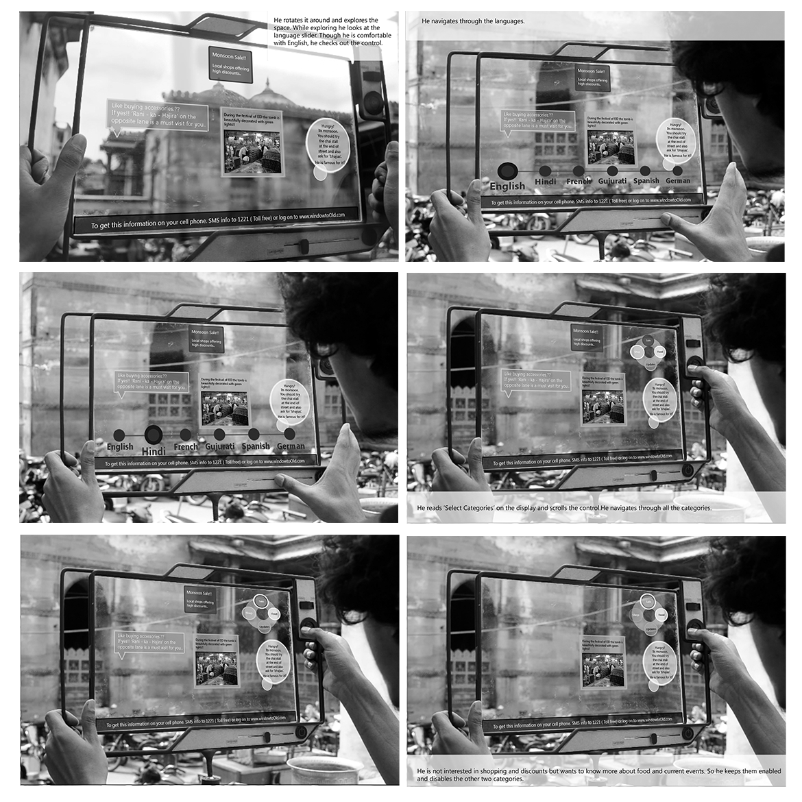
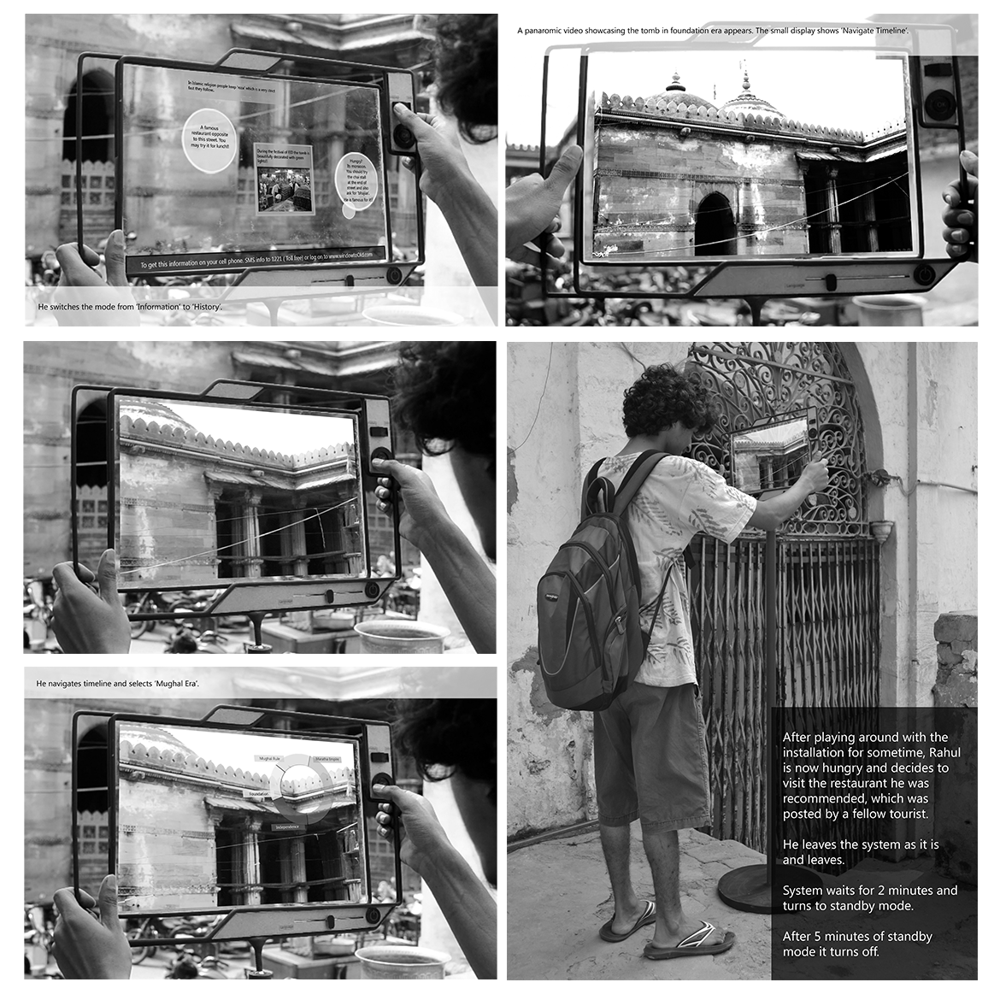

Window to Walled City, Ahmedabad.
Final diploma project at NID.
This is a self initiated and self sponsored project that aimed at communicating an essence of old city,
Ahmedabad to visitors and tell them more about the place in an interesting, easily accessible and fun format.
Old Ahmedabad is a living heritage and a rich source of stories and information with a flavor of variety in terms of communities and functions.
Current systems like guided walks, D’ tours and similar are very informative and
complementing these current systems, a more experience based approach was considered to come up with a system that is easily accessible to all kinds of visitors and gives them with an immersive experience of the place.
Outcome of this project was a proposed system of Augmented Reality installations at selected spots in the Old City.Being connected to a web portal and mobile service, it followed a cross-platform approach with multi-modal output functions displaying dynamic and participative content.
Form:
Using window as a metaphor, physical form of the installation was a frame that could be rotated at 360 degrees and tilted at an angle of 45 degrees to confer entire surrounding space, Exploring the attributes like variety and complexity of the old city, three frames were overlapped and composed to come up with a physical form.

Interaction was categorized in two modes.
History Mode:
First time visitors are interested in learning more about the stories and events associated with a place, that gives the site a significance and an element of mysery. These users could switch to history mode and navigate through a timeline to see more about how the transition of the place happened since years.
History of Ahmedabad was divided into five periods:
1. Foundation years
2. Mughal Rule
3.Maratha Empire
4.British Rule
5.Independence era.
Information Mode:
Frequent visitors, who are well aware of the history, are more interested in knowing about whats happening around them and what are the local places to explore around the site. More like place to shop some specialities and eat from famous joints. For them the information mode was designed to provide them with latest information. Categories in this mode and the information would be updated and monitored through the web service, where after authentication local people could sign up and contribute.

Domain Study and User Research


Medium:
Augmented Reality was used as the medium for the installations as there was a requirement of using a technology, that donot disconect the user from his surroundings like screen based interfaces, and provide them an immersive experience of the place with the needed information ovelaid.
Marker based and Markerless augmented reality techiniques were explored.

User Interaction Storyboard.


